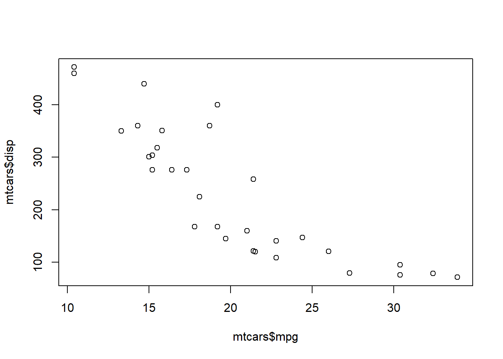
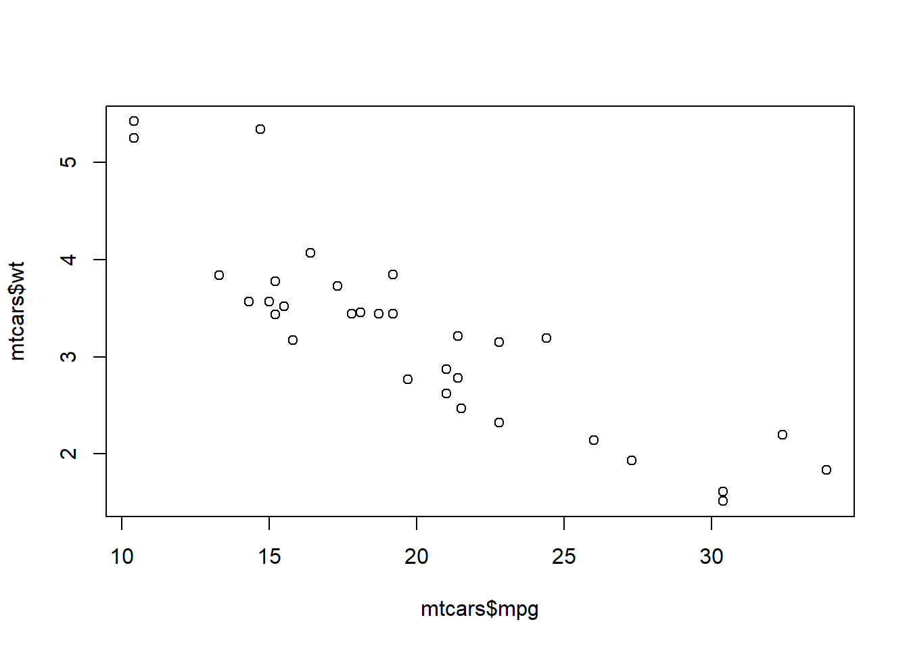

Code
install.packages("tidyverse")
install.packages("dplyr")
install.packages("ggpubr")
install.packages("GGally")
install.packages("skimr")
install.packages("ggplot2")
install.packages("ggfortify")
install.packages("ggfortify")With this series of scripts you can work at your own pace to try out some of the code that is needed to import, plot and analyze data in R.
Packages contain libraries with data, functions, code etc. You want to install packages at the beginning of your script. They stay on your computer, even when you close your R session.R will inform you, when you attempt to code a function, for which you do not have the package for. Packages can also be installed via the Install button within the Packages rider on the bottom right corner or over the Tools button.
install.packages("tidyverse")
install.packages("dplyr")
install.packages("ggpubr")
install.packages("GGally")
install.packages("skimr")
install.packages("ggplot2")
install.packages("ggfortify")
install.packages("ggfortify")When you have installed a package, you have to load it into your current R session. This has to be done every time you open R new. This can also be done by checking the boxes in the Packages rider.
library(tidyverse)
library(dplyr)
library(readr)
library(ggplot2)
library(ggpubr)
library(GGally)
library(skimr)
library(ggplot2)
library(ggfortify)?dplyr
??dplyrIn R, the main goal is to work with data. So we have to import data into the session. This can be done either with data files from your computer or other source, or (for training purposes) you can import data from the packages. This can be very valuable to learn how to wrangle the data and how to make plots.
getwd() #get the current working directory
setwd() #change working directory to somwhere elsebodyfat <- read_csv("C:/Users/vf22a541/OneDrive - Universitaet Bern/Bioinformatics Tutorial/datasets/bodyfat.csv") #Imports the data frame from a location on your computer with readr function
View(bodyfat) #Display the data frame
str(bodyfat) #Display dimensions of data frame and types of variablesspc_tbl_ [243 × 19] (S3: spec_tbl_df/tbl_df/tbl/data.frame)
$ Nr : num [1:243] 1 2 3 4 5 6 7 8 9 10 ...
$ density: num [1:243] 1.07 1.09 1.04 1.08 1.03 ...
$ bodyfat: num [1:243] 12.3 6.1 25.3 10.4 28.7 20.9 19.2 12.4 4.1 11.7 ...
$ age : num [1:243] 23 22 22 26 24 24 26 25 25 23 ...
$ weight : num [1:243] 154 173 154 185 184 ...
$ height : num [1:243] 67.8 72.2 66.2 72.2 71.2 ...
$ neck : num [1:243] 36.2 38.5 34 37.4 34.4 39 36.4 37.8 38.1 42.1 ...
$ chest : num [1:243] 93.1 93.6 95.8 101.8 97.3 ...
$ abdomen: num [1:243] 85.2 83 87.9 86.4 100 94.4 90.7 88.5 82.5 88.6 ...
$ hip : num [1:243] 94.5 98.7 99.2 101.2 101.9 ...
$ thigh : num [1:243] 59 58.7 59.6 60.1 63.2 66 58.4 60 62.9 63.1 ...
$ knee : num [1:243] 37.3 37.3 38.9 37.3 42.2 42 38.3 39.4 38.3 41.7 ...
$ ankle : num [1:243] 21.9 23.4 24 22.8 24 25.6 22.9 23.2 23.8 25 ...
$ biceps : num [1:243] 32 30.5 28.8 32.4 32.2 35.7 31.9 30.5 35.9 35.6 ...
$ forearm: num [1:243] 27.4 28.9 25.2 29.4 27.7 30.6 27.8 29 31.1 30 ...
$ wrist : num [1:243] 17.1 18.2 16.6 18.2 17.7 18.8 17.7 18.8 18.2 19.2 ...
$ gewicht: num [1:243] 70 78.7 69.9 83.9 83.7 ...
$ hoehe : num [1:243] 172 184 168 184 181 ...
$ bmi : num [1:243] 23.6 23.4 24.7 24.9 25.5 ...
- attr(*, "spec")=
.. cols(
.. Nr = col_double(),
.. density = col_double(),
.. bodyfat = col_double(),
.. age = col_double(),
.. weight = col_double(),
.. height = col_double(),
.. neck = col_double(),
.. chest = col_double(),
.. abdomen = col_double(),
.. hip = col_double(),
.. thigh = col_double(),
.. knee = col_double(),
.. ankle = col_double(),
.. biceps = col_double(),
.. forearm = col_double(),
.. wrist = col_double(),
.. gewicht = col_double(),
.. hoehe = col_double(),
.. bmi = col_double()
.. )
- attr(*, "problems")=<externalptr> summary(bodyfat) #Types of Variables and little statistic Nr density bodyfat age
Min. : 1.0 Min. :0.995 Min. : 0.70 Min. :22.00
1st Qu.: 65.5 1st Qu.:1.042 1st Qu.:12.50 1st Qu.:35.50
Median :129.0 Median :1.055 Median :19.20 Median :43.00
Mean :128.0 Mean :1.056 Mean :19.11 Mean :44.83
3rd Qu.:191.5 3rd Qu.:1.070 3rd Qu.:25.20 3rd Qu.:54.00
Max. :252.0 Max. :1.098 Max. :47.50 Max. :81.00
weight height neck chest
Min. :125.0 Min. :64.00 Min. :31.10 Min. : 83.4
1st Qu.:159.2 1st Qu.:68.38 1st Qu.:36.40 1st Qu.: 94.5
Median :176.2 Median :70.00 Median :38.00 Median : 99.6
Mean :178.2 Mean :70.29 Mean :37.96 Mean :100.7
3rd Qu.:196.8 3rd Qu.:72.25 3rd Qu.:39.40 3rd Qu.:105.3
Max. :262.8 Max. :77.50 Max. :43.90 Max. :128.3
abdomen hip thigh knee
Min. : 70.40 Min. : 85.30 Min. :49.3 Min. :33.00
1st Qu.: 84.90 1st Qu.: 95.55 1st Qu.:56.1 1st Qu.:36.90
Median : 91.00 Median : 99.30 Median :59.0 Median :38.50
Mean : 92.38 Mean : 99.69 Mean :59.3 Mean :38.54
3rd Qu.: 99.15 3rd Qu.:103.15 3rd Qu.:62.3 3rd Qu.:39.85
Max. :126.20 Max. :125.60 Max. :72.9 Max. :46.00
ankle biceps forearm wrist
Min. :19.1 Min. :24.80 Min. :21.00 Min. :15.80
1st Qu.:22.0 1st Qu.:30.25 1st Qu.:27.30 1st Qu.:17.60
Median :22.8 Median :32.00 Median :28.80 Median :18.30
Mean :23.0 Mean :32.24 Mean :28.68 Mean :18.22
3rd Qu.:24.0 3rd Qu.:34.35 3rd Qu.:30.00 3rd Qu.:18.80
Max. :27.0 Max. :39.10 Max. :34.90 Max. :21.40
gewicht hoehe bmi
Min. : 56.75 Min. :162.6 Min. :19.06
1st Qu.: 72.30 1st Qu.:173.7 1st Qu.:23.07
Median : 80.02 Median :177.8 Median :25.10
Mean : 80.91 Mean :178.5 Mean :25.34
3rd Qu.: 89.32 3rd Qu.:183.5 3rd Qu.:27.34
Max. :119.29 Max. :196.8 Max. :39.12 head(bodyfat) #Displays the first few rows of the data frame# A tibble: 6 × 19
Nr density bodyfat age weight height neck chest abdomen hip thigh
<dbl> <dbl> <dbl> <dbl> <dbl> <dbl> <dbl> <dbl> <dbl> <dbl> <dbl>
1 1 1.07 12.3 23 154. 67.8 36.2 93.1 85.2 94.5 59
2 2 1.09 6.1 22 173. 72.2 38.5 93.6 83 98.7 58.7
3 3 1.04 25.3 22 154 66.2 34 95.8 87.9 99.2 59.6
4 4 1.08 10.4 26 185. 72.2 37.4 102. 86.4 101. 60.1
5 5 1.03 28.7 24 184. 71.2 34.4 97.3 100 102. 63.2
6 6 1.05 20.9 24 210. 74.8 39 104. 94.4 108. 66
# ℹ 8 more variables: knee <dbl>, ankle <dbl>, biceps <dbl>, forearm <dbl>,
# wrist <dbl>, gewicht <dbl>, hoehe <dbl>, bmi <dbl>skim(bodyfat) #Shows very nice summary of the data with distribution| Name | bodyfat |
| Number of rows | 243 |
| Number of columns | 19 |
| _______________________ | |
| Column type frequency: | |
| numeric | 19 |
| ________________________ | |
| Group variables | None |
Variable type: numeric
| skim_variable | n_missing | complete_rate | mean | sd | p0 | p25 | p50 | p75 | p100 | hist |
|---|---|---|---|---|---|---|---|---|---|---|
| Nr | 0 | 1 | 128.02 | 73.09 | 1.00 | 65.50 | 129.00 | 191.50 | 252.00 | ▇▇▇▇▇ |
| density | 0 | 1 | 1.06 | 0.02 | 1.00 | 1.04 | 1.05 | 1.07 | 1.10 | ▁▃▇▇▂ |
| bodyfat | 0 | 1 | 19.11 | 8.19 | 0.70 | 12.50 | 19.20 | 25.20 | 47.50 | ▃▇▇▂▁ |
| age | 0 | 1 | 44.83 | 12.65 | 22.00 | 35.50 | 43.00 | 54.00 | 81.00 | ▅▇▇▂▁ |
| weight | 0 | 1 | 178.20 | 26.65 | 125.00 | 159.25 | 176.25 | 196.75 | 262.75 | ▃▇▅▂▁ |
| height | 0 | 1 | 70.29 | 2.58 | 64.00 | 68.38 | 70.00 | 72.25 | 77.50 | ▂▇▇▅▁ |
| neck | 0 | 1 | 37.96 | 2.28 | 31.10 | 36.40 | 38.00 | 39.40 | 43.90 | ▁▃▇▅▁ |
| chest | 0 | 1 | 100.73 | 8.01 | 83.40 | 94.50 | 99.60 | 105.30 | 128.30 | ▃▇▆▂▁ |
| abdomen | 0 | 1 | 92.38 | 10.07 | 70.40 | 84.90 | 91.00 | 99.15 | 126.20 | ▂▇▆▂▁ |
| hip | 0 | 1 | 99.69 | 6.37 | 85.30 | 95.55 | 99.30 | 103.15 | 125.60 | ▂▇▅▁▁ |
| thigh | 0 | 1 | 59.30 | 4.78 | 49.30 | 56.10 | 59.00 | 62.30 | 72.90 | ▃▇▇▃▁ |
| knee | 0 | 1 | 38.54 | 2.30 | 33.00 | 36.90 | 38.50 | 39.85 | 46.00 | ▂▇▇▂▁ |
| ankle | 0 | 1 | 23.00 | 1.34 | 19.10 | 22.00 | 22.80 | 24.00 | 27.00 | ▁▅▇▅▁ |
| biceps | 0 | 1 | 32.24 | 2.92 | 24.80 | 30.25 | 32.00 | 34.35 | 39.10 | ▁▆▇▆▂ |
| forearm | 0 | 1 | 28.68 | 2.02 | 21.00 | 27.30 | 28.80 | 30.00 | 34.90 | ▁▂▇▆▁ |
| wrist | 0 | 1 | 18.22 | 0.91 | 15.80 | 17.60 | 18.30 | 18.80 | 21.40 | ▂▆▇▂▁ |
| gewicht | 0 | 1 | 80.91 | 12.10 | 56.75 | 72.30 | 80.02 | 89.32 | 119.29 | ▃▇▅▂▁ |
| hoehe | 0 | 1 | 178.54 | 6.56 | 162.56 | 173.68 | 177.80 | 183.52 | 196.85 | ▂▇▇▅▁ |
| bmi | 0 | 1 | 25.34 | 3.31 | 19.06 | 23.08 | 25.10 | 27.34 | 39.12 | ▅▇▃▁▁ |
# Browse built-in datasets in R
data()#Shows dataset in console
mtcars mpg cyl disp hp drat wt qsec vs am gear carb
Mazda RX4 21.0 6 160.0 110 3.90 2.620 16.46 0 1 4 4
Mazda RX4 Wag 21.0 6 160.0 110 3.90 2.875 17.02 0 1 4 4
Datsun 710 22.8 4 108.0 93 3.85 2.320 18.61 1 1 4 1
Hornet 4 Drive 21.4 6 258.0 110 3.08 3.215 19.44 1 0 3 1
Hornet Sportabout 18.7 8 360.0 175 3.15 3.440 17.02 0 0 3 2
Valiant 18.1 6 225.0 105 2.76 3.460 20.22 1 0 3 1
Duster 360 14.3 8 360.0 245 3.21 3.570 15.84 0 0 3 4
Merc 240D 24.4 4 146.7 62 3.69 3.190 20.00 1 0 4 2
Merc 230 22.8 4 140.8 95 3.92 3.150 22.90 1 0 4 2
Merc 280 19.2 6 167.6 123 3.92 3.440 18.30 1 0 4 4
Merc 280C 17.8 6 167.6 123 3.92 3.440 18.90 1 0 4 4
Merc 450SE 16.4 8 275.8 180 3.07 4.070 17.40 0 0 3 3
Merc 450SL 17.3 8 275.8 180 3.07 3.730 17.60 0 0 3 3
Merc 450SLC 15.2 8 275.8 180 3.07 3.780 18.00 0 0 3 3
Cadillac Fleetwood 10.4 8 472.0 205 2.93 5.250 17.98 0 0 3 4
Lincoln Continental 10.4 8 460.0 215 3.00 5.424 17.82 0 0 3 4
Chrysler Imperial 14.7 8 440.0 230 3.23 5.345 17.42 0 0 3 4
Fiat 128 32.4 4 78.7 66 4.08 2.200 19.47 1 1 4 1
Honda Civic 30.4 4 75.7 52 4.93 1.615 18.52 1 1 4 2
Toyota Corolla 33.9 4 71.1 65 4.22 1.835 19.90 1 1 4 1
Toyota Corona 21.5 4 120.1 97 3.70 2.465 20.01 1 0 3 1
Dodge Challenger 15.5 8 318.0 150 2.76 3.520 16.87 0 0 3 2
AMC Javelin 15.2 8 304.0 150 3.15 3.435 17.30 0 0 3 2
Camaro Z28 13.3 8 350.0 245 3.73 3.840 15.41 0 0 3 4
Pontiac Firebird 19.2 8 400.0 175 3.08 3.845 17.05 0 0 3 2
Fiat X1-9 27.3 4 79.0 66 4.08 1.935 18.90 1 1 4 1
Porsche 914-2 26.0 4 120.3 91 4.43 2.140 16.70 0 1 5 2
Lotus Europa 30.4 4 95.1 113 3.77 1.513 16.90 1 1 5 2
Ford Pantera L 15.8 8 351.0 264 4.22 3.170 14.50 0 1 5 4
Ferrari Dino 19.7 6 145.0 175 3.62 2.770 15.50 0 1 5 6
Maserati Bora 15.0 8 301.0 335 3.54 3.570 14.60 0 1 5 8
Volvo 142E 21.4 4 121.0 109 4.11 2.780 18.60 1 1 4 2#Shows the first few rows in dataset
head(mtcars) mpg cyl disp hp drat wt qsec vs am gear carb
Mazda RX4 21.0 6 160 110 3.90 2.620 16.46 0 1 4 4
Mazda RX4 Wag 21.0 6 160 110 3.90 2.875 17.02 0 1 4 4
Datsun 710 22.8 4 108 93 3.85 2.320 18.61 1 1 4 1
Hornet 4 Drive 21.4 6 258 110 3.08 3.215 19.44 1 0 3 1
Hornet Sportabout 18.7 8 360 175 3.15 3.440 17.02 0 0 3 2
Valiant 18.1 6 225 105 2.76 3.460 20.22 1 0 3 1#select columns in a dataframe using their names
select(mtcars, hp) hp
Mazda RX4 110
Mazda RX4 Wag 110
Datsun 710 93
Hornet 4 Drive 110
Hornet Sportabout 175
Valiant 105
Duster 360 245
Merc 240D 62
Merc 230 95
Merc 280 123
Merc 280C 123
Merc 450SE 180
Merc 450SL 180
Merc 450SLC 180
Cadillac Fleetwood 205
Lincoln Continental 215
Chrysler Imperial 230
Fiat 128 66
Honda Civic 52
Toyota Corolla 65
Toyota Corona 97
Dodge Challenger 150
AMC Javelin 150
Camaro Z28 245
Pontiac Firebird 175
Fiat X1-9 66
Porsche 914-2 91
Lotus Europa 113
Ford Pantera L 264
Ferrari Dino 175
Maserati Bora 335
Volvo 142E 109#transform table into data frame if necessary
data("HairEyeColor")
df <- as.data.frame(HairEyeColor)
#?HairEyeColorselect(mtcars, c(mpg, wt, cyl)) #either just to look at it (displayed in the script) mpg wt cyl
Mazda RX4 21.0 2.620 6
Mazda RX4 Wag 21.0 2.875 6
Datsun 710 22.8 2.320 4
Hornet 4 Drive 21.4 3.215 6
Hornet Sportabout 18.7 3.440 8
Valiant 18.1 3.460 6
Duster 360 14.3 3.570 8
Merc 240D 24.4 3.190 4
Merc 230 22.8 3.150 4
Merc 280 19.2 3.440 6
Merc 280C 17.8 3.440 6
Merc 450SE 16.4 4.070 8
Merc 450SL 17.3 3.730 8
Merc 450SLC 15.2 3.780 8
Cadillac Fleetwood 10.4 5.250 8
Lincoln Continental 10.4 5.424 8
Chrysler Imperial 14.7 5.345 8
Fiat 128 32.4 2.200 4
Honda Civic 30.4 1.615 4
Toyota Corolla 33.9 1.835 4
Toyota Corona 21.5 2.465 4
Dodge Challenger 15.5 3.520 8
AMC Javelin 15.2 3.435 8
Camaro Z28 13.3 3.840 8
Pontiac Firebird 19.2 3.845 8
Fiat X1-9 27.3 1.935 4
Porsche 914-2 26.0 2.140 4
Lotus Europa 30.4 1.513 4
Ford Pantera L 15.8 3.170 8
Ferrari Dino 19.7 2.770 6
Maserati Bora 15.0 3.570 8
Volvo 142E 21.4 2.780 4mtcars_2 <- select(mtcars, mpg, wt, cyl) #or assign it to a new object
select(mtcars, 2:4) cyl disp hp
Mazda RX4 6 160.0 110
Mazda RX4 Wag 6 160.0 110
Datsun 710 4 108.0 93
Hornet 4 Drive 6 258.0 110
Hornet Sportabout 8 360.0 175
Valiant 6 225.0 105
Duster 360 8 360.0 245
Merc 240D 4 146.7 62
Merc 230 4 140.8 95
Merc 280 6 167.6 123
Merc 280C 6 167.6 123
Merc 450SE 8 275.8 180
Merc 450SL 8 275.8 180
Merc 450SLC 8 275.8 180
Cadillac Fleetwood 8 472.0 205
Lincoln Continental 8 460.0 215
Chrysler Imperial 8 440.0 230
Fiat 128 4 78.7 66
Honda Civic 4 75.7 52
Toyota Corolla 4 71.1 65
Toyota Corona 4 120.1 97
Dodge Challenger 8 318.0 150
AMC Javelin 8 304.0 150
Camaro Z28 8 350.0 245
Pontiac Firebird 8 400.0 175
Fiat X1-9 4 79.0 66
Porsche 914-2 4 120.3 91
Lotus Europa 4 95.1 113
Ford Pantera L 8 351.0 264
Ferrari Dino 6 145.0 175
Maserati Bora 8 301.0 335
Volvo 142E 4 121.0 109mutate(mtcars, mpg_log = log(mpg)) #add a column with the mpg variable log transformed mpg cyl disp hp drat wt qsec vs am gear carb
Mazda RX4 21.0 6 160.0 110 3.90 2.620 16.46 0 1 4 4
Mazda RX4 Wag 21.0 6 160.0 110 3.90 2.875 17.02 0 1 4 4
Datsun 710 22.8 4 108.0 93 3.85 2.320 18.61 1 1 4 1
Hornet 4 Drive 21.4 6 258.0 110 3.08 3.215 19.44 1 0 3 1
Hornet Sportabout 18.7 8 360.0 175 3.15 3.440 17.02 0 0 3 2
Valiant 18.1 6 225.0 105 2.76 3.460 20.22 1 0 3 1
Duster 360 14.3 8 360.0 245 3.21 3.570 15.84 0 0 3 4
Merc 240D 24.4 4 146.7 62 3.69 3.190 20.00 1 0 4 2
Merc 230 22.8 4 140.8 95 3.92 3.150 22.90 1 0 4 2
Merc 280 19.2 6 167.6 123 3.92 3.440 18.30 1 0 4 4
Merc 280C 17.8 6 167.6 123 3.92 3.440 18.90 1 0 4 4
Merc 450SE 16.4 8 275.8 180 3.07 4.070 17.40 0 0 3 3
Merc 450SL 17.3 8 275.8 180 3.07 3.730 17.60 0 0 3 3
Merc 450SLC 15.2 8 275.8 180 3.07 3.780 18.00 0 0 3 3
Cadillac Fleetwood 10.4 8 472.0 205 2.93 5.250 17.98 0 0 3 4
Lincoln Continental 10.4 8 460.0 215 3.00 5.424 17.82 0 0 3 4
Chrysler Imperial 14.7 8 440.0 230 3.23 5.345 17.42 0 0 3 4
Fiat 128 32.4 4 78.7 66 4.08 2.200 19.47 1 1 4 1
Honda Civic 30.4 4 75.7 52 4.93 1.615 18.52 1 1 4 2
Toyota Corolla 33.9 4 71.1 65 4.22 1.835 19.90 1 1 4 1
Toyota Corona 21.5 4 120.1 97 3.70 2.465 20.01 1 0 3 1
Dodge Challenger 15.5 8 318.0 150 2.76 3.520 16.87 0 0 3 2
AMC Javelin 15.2 8 304.0 150 3.15 3.435 17.30 0 0 3 2
Camaro Z28 13.3 8 350.0 245 3.73 3.840 15.41 0 0 3 4
Pontiac Firebird 19.2 8 400.0 175 3.08 3.845 17.05 0 0 3 2
Fiat X1-9 27.3 4 79.0 66 4.08 1.935 18.90 1 1 4 1
Porsche 914-2 26.0 4 120.3 91 4.43 2.140 16.70 0 1 5 2
Lotus Europa 30.4 4 95.1 113 3.77 1.513 16.90 1 1 5 2
Ford Pantera L 15.8 8 351.0 264 4.22 3.170 14.50 0 1 5 4
Ferrari Dino 19.7 6 145.0 175 3.62 2.770 15.50 0 1 5 6
Maserati Bora 15.0 8 301.0 335 3.54 3.570 14.60 0 1 5 8
Volvo 142E 21.4 4 121.0 109 4.11 2.780 18.60 1 1 4 2
mpg_log
Mazda RX4 3.044522
Mazda RX4 Wag 3.044522
Datsun 710 3.126761
Hornet 4 Drive 3.063391
Hornet Sportabout 2.928524
Valiant 2.895912
Duster 360 2.660260
Merc 240D 3.194583
Merc 230 3.126761
Merc 280 2.954910
Merc 280C 2.879198
Merc 450SE 2.797281
Merc 450SL 2.850707
Merc 450SLC 2.721295
Cadillac Fleetwood 2.341806
Lincoln Continental 2.341806
Chrysler Imperial 2.687847
Fiat 128 3.478158
Honda Civic 3.414443
Toyota Corolla 3.523415
Toyota Corona 3.068053
Dodge Challenger 2.740840
AMC Javelin 2.721295
Camaro Z28 2.587764
Pontiac Firebird 2.954910
Fiat X1-9 3.306887
Porsche 914-2 3.258097
Lotus Europa 3.414443
Ford Pantera L 2.760010
Ferrari Dino 2.980619
Maserati Bora 2.708050
Volvo 142E 3.063391filter(mtcars, mpg == max(mpg)) #just to find out whats the max mpg cyl disp hp drat wt qsec vs am gear carb
Toyota Corolla 33.9 4 71.1 65 4.22 1.835 19.9 1 1 4 1mtcars_over20mpg <- filter(mtcars, mpg >= 20) #or again assign to a new object
mtcars %>% filter(disp > mean(disp, na.rm = T)) mpg cyl disp hp drat wt qsec vs am gear carb
Hornet 4 Drive 21.4 6 258.0 110 3.08 3.215 19.44 1 0 3 1
Hornet Sportabout 18.7 8 360.0 175 3.15 3.440 17.02 0 0 3 2
Duster 360 14.3 8 360.0 245 3.21 3.570 15.84 0 0 3 4
Merc 450SE 16.4 8 275.8 180 3.07 4.070 17.40 0 0 3 3
Merc 450SL 17.3 8 275.8 180 3.07 3.730 17.60 0 0 3 3
Merc 450SLC 15.2 8 275.8 180 3.07 3.780 18.00 0 0 3 3
Cadillac Fleetwood 10.4 8 472.0 205 2.93 5.250 17.98 0 0 3 4
Lincoln Continental 10.4 8 460.0 215 3.00 5.424 17.82 0 0 3 4
Chrysler Imperial 14.7 8 440.0 230 3.23 5.345 17.42 0 0 3 4
Dodge Challenger 15.5 8 318.0 150 2.76 3.520 16.87 0 0 3 2
AMC Javelin 15.2 8 304.0 150 3.15 3.435 17.30 0 0 3 2
Camaro Z28 13.3 8 350.0 245 3.73 3.840 15.41 0 0 3 4
Pontiac Firebird 19.2 8 400.0 175 3.08 3.845 17.05 0 0 3 2
Ford Pantera L 15.8 8 351.0 264 4.22 3.170 14.50 0 1 5 4
Maserati Bora 15.0 8 301.0 335 3.54 3.570 14.60 0 1 5 8max_cyl <- arrange(mtcars, desc(cyl)) #arrange a colum in descending orderQuick plots with the plot(), hist() function is very easy and quick. The plots reach a creative limit, where other packages such as ggplot2 or gpubr will produce much nicer graphs for puplications.
hist(bodyfat$density) #A histogram of the bodyfat datahist(mtcars$mpg) # A histogram of the mtcars data
plot(mtcars$mpg, mtcars$hp) # A Scatterplot of the mtcars data
hist(mtcars$mpg) # A histogram of the mtcars data
plot(mtcars$mpg, mtcars$hp) # A Scatterplot of the mtcars dataplot(mtcars$mpg, mtcars$disp)
# Transformation of variables
mtcars <- mtcars %>% mutate(disp_log = log(disp))
plot(mtcars$mpg, mtcars$disp_log)
# Continous variables mpg and wt
plot(x = mtcars$mpg, y = mtcars$wt)
hist(mtcars$mpg)
hist(mtcars$wt)#plotting all variables against each other gives a base for hypothesis
ggpairs(mtcars)